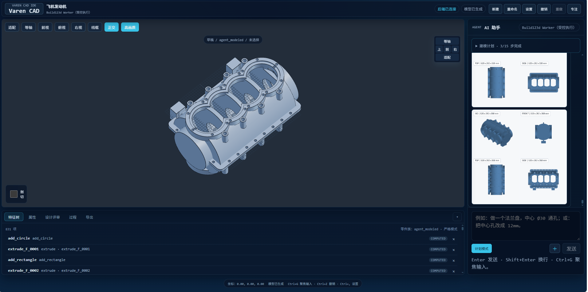

理解与计算
整理设计意图，估算关键尺寸。需求不清楚时先向你提问。
Varen CAD 是为机械设计打造的 AI 建模工具。它先计算、提问、列出 BOM 等你确认，再逐件创建可编辑的参数化零件，检查装配并导出 STEP。检查不过，不会把结果说成成功交付。

从需求到装配按步骤推进。计划先审核，几何后生成，结果再检查。
整理设计意图，估算关键尺寸。需求不清楚时先向你提问。
列出 BOM、零件参数与建模步骤；你确认后才开始建模。
用 CAD 内核逐件创建参数化 B-Rep 零件，保留特征历史。
验证零件与装配干涉。失败会阻止导出为成功结果，并保留记录。
以下是 AI CAD 工作流的真实任务结果。案例展示能力，不代表每个任务都能一次成功。


AI 生成不等于工程正确。Varen CAD 把计算、计划、建模和检查结果留给人复核。
以 OpenCascade 内核创建 B-Rep 几何，导出参数化零件和装配 STEP。
AI 提出零件清单与参数计划，批准后才执行建模。
几何、特征契约或碰撞检查失败时，系统会拦截交付并记录原因。
项目文件保存在本机；若连接远程模型服务，发送的提示词和上下文仍受服务商政策约束。
当前为 Windows 封闭 Beta。请在使用前了解这些边界。
production_ready 始终为 false。制造前由工程师复核尺寸、材料和设计。
不提供完整 2D 工程图流程或通用装配配合、运动求解器。
Beta 安装包面向 Windows x64；远程模型端点需要用户自行配置。
封闭 Beta · 概念设计与快速原型 · 输出需人工工程复核